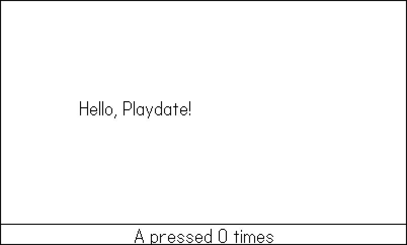
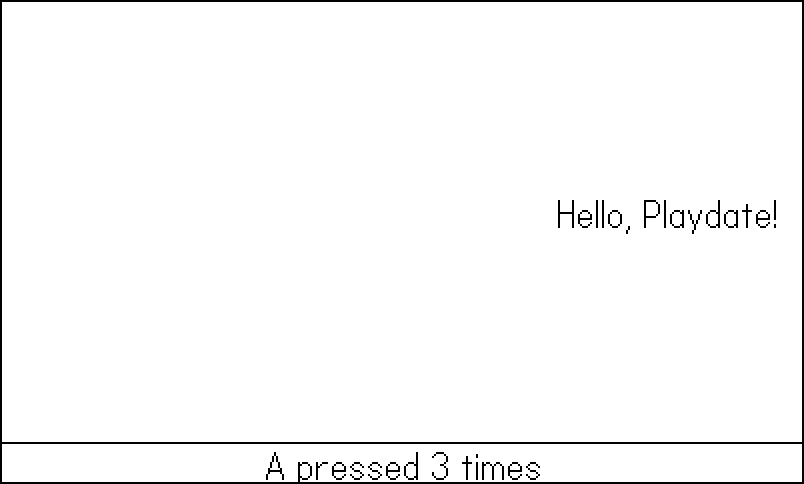
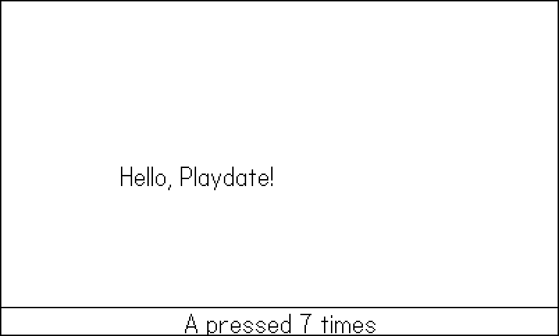

1 Hello, Playdate
By the end of this chapter you will have a Playdate program of your own: a greeting that bounces around the screen while the A button counts presses. It is deliberately tiny — about forty lines of Lua — but getting it on screen forces you through everything that makes Playdate development different from writing Lua anywhere else: a fixed piece of hardware with unusual constraints, a compiler called pdc, a Simulator that is your primary test rig, and a metadata file whose most obscure field turns out to matter more than its famous ones.
We will tour the hardware first, because on Playdate the hardware is not an implementation detail — it is the design brief. Then we unpack the SDK, dissect the project layout, walk through the example line by line, build it, run it in the Simulator, and finally put it on a real device. Along the way you will meet two small files, shots.lua and bookharness.lua, that ride along with every example in this book; they are how every screenshot in these pages was captured, and by Chapter 18 you will be using the same trick to test your own games without touching them.
One promise before we start: every listing in this book is extracted directly from a buildable example project, and every figure was captured automatically from that same project. If a listing and a screenshot appear together, the code you are reading produced the pixels you are looking at.
1.1 The hardware you are writing for
The Playdate is a pocket console from Panic: a bright yellow square about the size of a drink coaster. Everything you write targets exactly one hardware configuration, which is a luxury — no resolution detection, no aspect-ratio handling, no settings screen full of graphics toggles. But that one configuration is opinionated, and each of its opinions will shape your code.
The screen is 400x240 pixels, and every pixel is black or white. There is no gray, no color, no alpha channel. The display is a Sharp memory LCD: razor sharp, fully readable in direct sunlight, and unlit — there is no backlight, so contrast is everything. When a game in this book appears to show gray, it is an illusion made of dither patterns, which get a whole chapter (Chapter 4). The 1-bit constraint sounds brutal and turns out to be liberating: art is fast to make, readable at a glance, and impossible to over-produce.
Input is a d-pad, two face buttons (A and B), and a crank. The crank folds out from the right side, rotates freely in both directions with no stops, and reports its absolute angle. It is the machine’s signature control and the reason Chapter 10 exists. There is also a menu button (games do not read it directly; it opens the System Menu), a three-axis accelerometer, and a microphone. There is no touchscreen — new players paw at the screen anyway, so nothing in your UI should look tappable.
The processor is a small ARM Cortex-M7 microcontroller, not a phone-class chip. The Lua runtime is comfortable at the default 30 frames per second if you are disciplined about drawing, and Chapter 19 is about exactly that discipline. The display can be driven at up to 50 fps, but 30 is the recommended figure and every game in this book runs there. One caution that will save you grief in Chapter 19: the Simulator runs your code on your desktop CPU, which is enormously faster than the device. Something smooth in the Simulator can crawl on hardware, so real games get tested on real Playdates.
Playdate games can be written in Lua, in C, or in a mix. This book is about the Lua SDK: nearly everything you want to do is reachable from Lua, iteration is instant, and the performance ceiling is higher than its reputation suggests. The C API appears exactly once, as an escape hatch, in Chapter 19.
1.2 What is in the SDK
Download the Playdate SDK from Panic and it installs to a single directory — on macOS, ~/Developer/PlaydateSDK. This book was built against SDK 3.0.6. Inside, the pieces you will touch are:
bin/pdc— the Playdate compiler. It takes a source directory and produces a.pdxbundle, the unit that both the Simulator and the device run.bin/Playdate Simulator.app— the Simulator. It runs.pdxbundles, emulates the d-pad, buttons, crank, and accelerometer, and adds development tools (a Lua console, memory and CPU meters, a device upload menu).bin/pdutil— a command-line utility for talking to a connected device.CoreLibs/— optional Lua libraries that ship with the SDK: the object system, sprite support, timers, easing curves, and more. You pull them in per-file withimport "CoreLibs/..."; Chapter 2 covers them.Inside Playdate.html— the full Lua API reference. Keep it open; this book teaches you the shape of the SDK and the patterns that make games out of it, but the reference is the authority on every optional argument.Disk/— the Simulator’s stand-in for the device’s storage. When your game saves data, this is where it lands on your development machine, in a subdirectory named after your game (more on that in a moment, because the naming rule matters).
Two shell conveniences are worth setting up once: export PLAYDATE_SDK_PATH pointing at the SDK, and add the SDK’s bin/ to your PATH so pdc and pdutil run from anywhere. Appendix C walks through the full environment setup, including the preferences that let the Simulator run unattended.
1.3 Anatomy of a project
A Playdate project is a directory. The convention — used by the SDK, by all sixty games this book draws on, and by every example here — is a folder per game with a source/ directory inside it:
examples/01-hello/
├── Makefile # two lines; wraps the pdc invocation
└── source/
├── main.lua # the entry point; pdc requires this file
├── pdxinfo # metadata: name, author, bundleID, ...
└── shots.lua # book scaffolding (figure script)pdc compiles everything in source/: Lua files are compiled to bytecode and linked into a single pdz, images become .pdi files, audio is converted, and any other assets are copied through. The one hard requirement is main.lua — that is where execution starts. Other Lua files join the program via import, which we will dig into properly in Chapter 2.
1.3.1 pdxinfo, and why bundleID is the field to get right
pdxinfo is a plain-text file of key=value lines at the root of source/. Here is the example’s:
name=Hello
author=Simon Frost
description=Chapter 1: a bouncing greeting and a button counter.
bundleID=com.sdwfrost.book.01hello
version=1.0
buildNumber=1Field by field:
name,author,description— what the launcher shows. Cosmetic, but blank fields look shabby on a device.bundleID— a unique identifier in reverse-DNS notation. This is the field that does something.version— a display string for humans. The system attaches no meaning to it.buildNumber— a monotonically increasing integer. For sideloaded games this is required: it is how the device decides whether an update is newer than what is installed. Forgetting to bump it is the classic “why won’t my update install” bug, and Chapter 20 returns to it.
There are more optional fields — imagePath for launcher card art, launchSoundPath, content warnings — which belong to the shipping chapter (Chapter 20). A bare-bones pdxinfo like the one above is exactly enough for development.
Everything your game writes — save files, the JSON the book’s harness emits — goes to a per-game data directory keyed by bundleID. In the Simulator that is Disk/Data/<bundleID>/ inside the SDK; on the device it is the game’s private data folder. Two consequences. First, if two of your projects share a bundleID, they will happily read and corrupt each other’s saves. Second, any tooling that watches your game’s output (like this book’s screenshot pipeline, or the smoke-test scripts in Chapter 18) finds it by bundleID — a typo there and your tools poll an empty directory forever. Pick the ID first, make it unique, never reuse it. The examples in this book use com.sdwfrost.book.NNslug, one per chapter, so no two examples can touch each other’s data.
1.4 A first program
Here is the whole game, minus scaffolding. First, the state — a message, a position, a velocity, and a counter:
local gfx <const> = playdate.graphics
local msg <const> = "Hello, Playdate!"
local x, y = 40, 60 -- text position, in pixels
local dx, dy = 2, 2 -- velocity, in pixels per frame
local presses = 0 -- how many times A has been pressedTwo things to notice before the loop. The first line is the most copied line in Playdate development: the entire API lives under the global playdate table, graphics under playdate.graphics, and typing that forty times per file is both tedious and slow — every use would be two global table lookups at runtime. So every file starts by caching it in a local. The <const> annotation is a Lua 5.4 attribute that makes the binding immutable; the compiler can then treat it as a constant. It is pure win and costs six characters; Chapter 2 has the details.
Second, the velocity is in pixels per frame — this program moves the text by dx every update. That is fine for forty lines of hello, and it quietly poses the question Chapter 3 answers properly: what exactly is a frame, and how long is one?
Now the loop:
function playdate.update()
-- Input: was A just pressed this frame?
local bot = Harness.input(frame)
local aPressed = bot and bot.aPressed
or playdate.buttonJustPressed(playdate.kButtonA)
if aPressed then
presses = presses + 1
Harness.count("presses")
end
-- Move, and bounce off the screen edges.
local w, h = gfx.getTextSize(msg)
x = x + dx
y = y + dy
if x < 0 or x + w > 400 then dx = -dx end
if y < 0 or y + h > 216 then dy = -dy end
-- Draw everything, every frame.
gfx.clear(gfx.kColorWhite)
gfx.drawText(msg, x, y)
gfx.drawLine(0, 220, 400, 220)
gfx.drawTextAligned("A pressed " .. presses .. " times", 200, 224,
kTextAlignment.center)
endplaydate.update is the heart of every Playdate game. You define it; the OS calls it — thirty times a second by default — and everything happens inside it: read input, move things, draw. There is no separate render callback and no event loop of your own. If this function is empty, the screen freezes; if it is slow, the whole game slows down. The next two chapters are devoted to the machinery this one function implies, so for now, three observations:
Input is polled. playdate.buttonJustPressed(playdate.kButtonA) answers “did A go down since the last frame?” — an edge, not a level, so holding the button counts once. Its sibling buttonIsPressed answers “is it down right now?”. The difference between those two questions matters enough to get its own section in Chapter 9.
We redraw everything, every frame. gfx.clear(gfx.kColorWhite) wipes the screen, then the text, the line, and the counter are drawn from scratch. This immediate-mode style — clear, draw the world, repeat — is how nearly all of the games behind this book render. The SDK also offers a retained sprite system that tracks dirty regions for you (Chapter 6); we start immediate because there is nothing hidden in it.
Text has a size you can ask for. gfx.getTextSize(msg) returns the rendered width and height in the current font, which is what lets the bounce check use the text’s true edges instead of a guess. The bounce itself is two sign flips; the 216 keeps the greeting above the score line rather than letting it fall off the 240-pixel bottom.
And the one piece of the file we skipped — the bot line at the top of the update — belongs to the book’s scaffolding, explained at the end of this chapter.
1.5 Building and running
pdc takes two arguments — the source directory and the output bundle — and that is the entire build system:
pdc source Hello.pdxThe output .pdx is a directory that macOS shows as a single bundle icon. It is what you run, and later, what you ship. Compilation is near-instant; there is no linking step to wait on, and the edit-build-run loop is a couple of seconds end to end.
It is worth peeking inside the bundle once (right-click → Show Package Contents, or just ls Hello.pdx). All of your Lua — however many files it eventually spans — has been compiled into a single main.pdz of bytecode; your pdxinfo rides along verbatim; and any images or sounds you add later appear here in their converted device formats. Nothing in a pdx is your original source, which has two consequences: shipping a pdx does not ship readable code, and editing a pdx by hand is never the fix — the source directory is always the truth, and pdc is always the path from one to the other. Add -q to keep it quiet in scripts; the examples’ Makefiles do.
To run it, open the bundle in the Simulator. Double-clicking works, as does File → Open inside the Simulator, but the form you want in your muscle memory (and your Makefiles) is the command line:
open ~/Developer/PlaydateSDK/bin/"Playdate Simulator.app" \
--args "$(pwd)/Hello.pdx"On SDK 3.0.6, launching the Simulator by app name or with open -g (background) can load your pdx and then never actually start it — a window appears, the game does not run, and nothing tells you why. The form above — explicit path to the app, foreground, --args with an absolute path to the pdx — works every time. Every build script in this book uses it.
This one was paid for. An entire fleet of automated test scripts went quietly dead after an SDK update because they used the by-name form; the fix now sits as a warning comment in every one of them:
# midiplayer/tools/smoke.sh:18
# 3.0.6 sim: must launch by explicit path with --args and WITHOUT -g;
# background/by-name launches load the pdx but never start the game
open "$HOME/Developer/PlaydateSDK/bin/Playdate Simulator.app" \
--args "$(pwd)/MidiPlayer-smoke.pdx"Once your game is running, the Simulator maps your keyboard to the d-pad and buttons and draws an on-screen crank you can drag; the Playdate and Device menus hold the development extras. The two worth finding on day one are the console window, where print() output and Lua error tracebacks appear, and the Rewind control, which scrubs backwards through recent frames after something goes visually wrong.
Each example ships with a two-line Makefile so you do not retype any of this. make -C examples/01-hello run builds a clean pdx into out/ and opens it in the Simulator; make book produces the instrumented build the figure pipeline uses.
Figure 1.1 shows the result at frame 20 of a scripted run: the greeting on its way down-right, zero presses recorded.



Between Figure 1.1, Figure 1.2, and Figure 1.3 the only thing that changed is time — the three figures are frames 20, 120, and 230 of one scripted, deterministic run. How those frames were chosen and captured is the last topic of this chapter.
A clean pdc run means your Lua parses. It does not mean the game works, or even starts: call a misspelled API and you will not hear about it until that line executes in the Simulator. On this hardware there is no REPL-driven safety net, so runtime verification means actually running the game — which is why this book bothers with a scripted harness at all, and why Chapter 18 treats “run it headless and check what happened” as a first-class build step.
1.6 Onto the device
The Simulator is where you will spend your development time, but the point of all this is a yellow object in your hands. Getting your pdx onto a real Playdate takes four steps:
- Connect the Playdate over USB.
- Wake it with the lock button on the top edge.
- Run your game in the Simulator.
- Choose Upload Game to Device from the Simulator’s Device menu.
The game uploads, installs, and starts on the device automatically. If there is no Device menu, the device is asleep, locked, or not actually connected — the menu only exists while the Simulator can see a Playdate.
For distributing to other people’s devices there is sideloading: players upload your pdx (zipped) to their Playdate account on play.date, and the device downloads it over Wi-Fi like any store game. That path — along with launcher card art, icons, and the packaging checklist — is Chapter 20’s territory. The one thing to remember now is the buildNumber rule from earlier: sideload updates are recognized only if the number went up.
1.7 The scaffolding you will see everywhere
Every example in this book carries two extra files, and the honest thing is to show them to you in chapter one rather than pretend the screenshots took themselves.
The first is shots.lua, a declaration of how to drive the example and what to photograph:
-- Figure script for the book's capture pipeline (Appendix D).
-- The bot presses A once a second; we shoot three named frames.
Shots = {
seed = 1,
last = 240,
shots = {
["hello-early"] = 20,
["hello-mid"] = 120,
["hello-later"] = 230,
},
script = function(frame)
return { aPressed = (frame % 30 == 0) }
end,
}Read it as a film script. The RNG is seeded, so the run is identical every time. script is called once per frame and returns synthetic input — here, “press A on every 30th frame.” And shots names the frames worth keeping: the three names on the left became the three PNG files in the figures above, captured the instant those frames finished drawing.
The second file, bookharness.lua, is shared by all examples. It wraps the real update function:
-- The harness wraps the real update in a pcall and captures the
-- book's figures; in a release build it calls straight through
-- (Chapter 18 explains all of this).
local realUpdate = playdate.update
function playdate.update()
frame = frame + 1
Harness.frame(frame, realUpdate)
endHarness.frame counts frames, runs the real update inside pcall so a crash is recorded instead of silently ending the run, saves the named screenshots, and writes a heartbeat file the build tools poll. That is also what the bot line in the update loop was: the harness offering this frame’s scripted input, with nil meaning “no script — read the real buttons.” In a release build the harness is compiled with a flag that turns all of it off.
If this smells like a test rig, it is. The same pattern — scripted input in, counters and screenshots out, no human required — is how the sixty games behind this book were smoke-tested, and Chapter 18 teaches you to build the full version yourself. Until then, the scaffolding asks nothing of you except to leave those two imports at the top of main.lua.
1.8 What you know now
- The target is fixed: 400x240 pixels, 1-bit black-and-white, d-pad, A/B, a crank, no touchscreen — and one hardware spec for everyone.
- The SDK gives you
pdc(compiler), the Simulator (your test rig),CoreLibs(optional Lua libraries), andInside Playdate.html(the API reference). - A project is a
source/directory;main.luais the entry point;pdc source Game.pdxbuilds the whole thing. pdxinfocarries the metadata;bundleIDnames your save-data directory, andbuildNumbermust increase for sideload updates to install.playdate.updateis the whole show: the OS calls it 30 times a second, and your game is whatever that function does.pdconly proves your code parses; running it — in the Simulator, and eventually on the device via Upload Game to Device — is the only verification there is.- Every example carries
shots.luaandbookharness.lua, which scripted the runs that produced this chapter’s figures.
Next, Chapter 2: what kind of Lua this actually is — one shared global environment, a sandbox with no os or io, an optional class system — and the module conventions that fall out of it.